My Projects
Explore a curated collection of projects that highlight my practical expertise in applying DevOps principles, designing and deploying resilient cloud architectures, and developing efficient software solutions through automation and continuous integration/delivery
Mobile Applications
Live apps built solo — from cloud infrastructure to UI
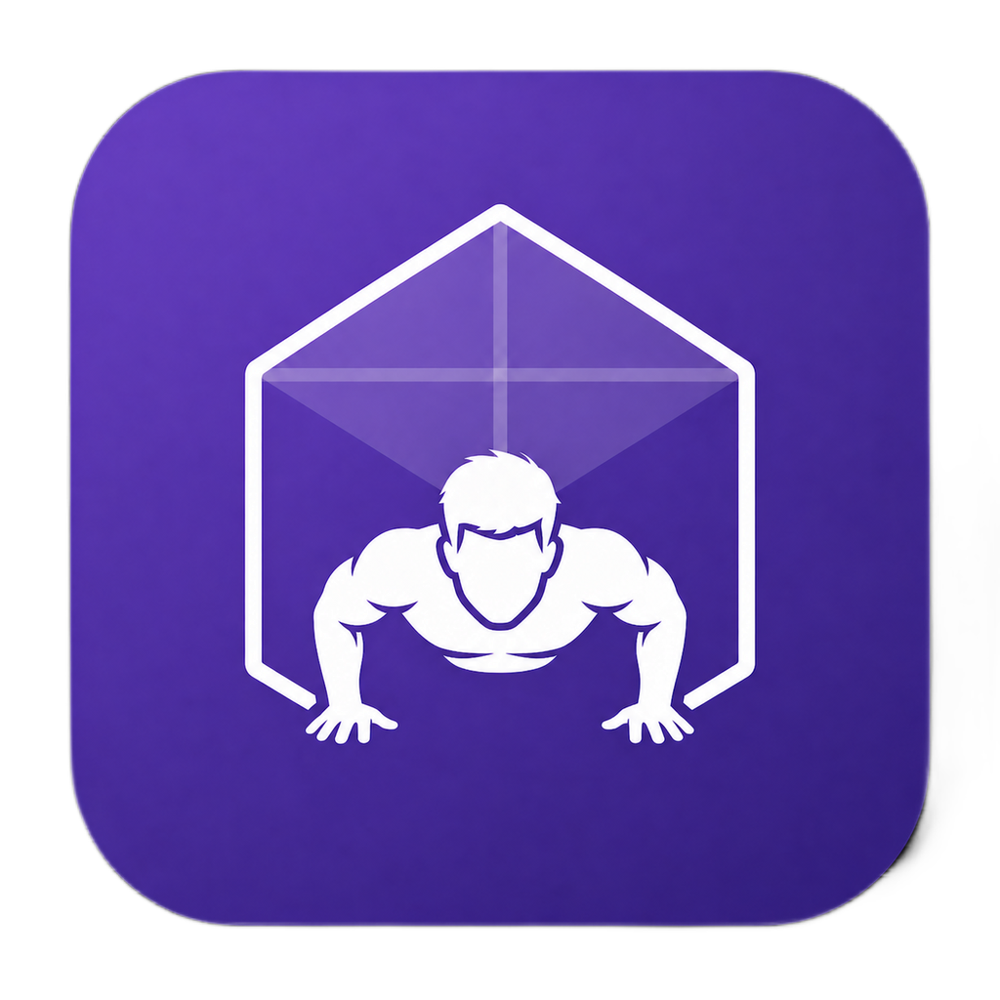
Obsid Workout
Push-up training. Track. Achieve.
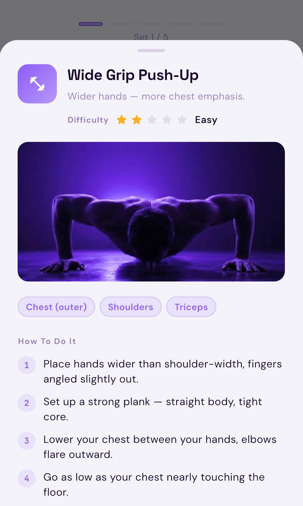
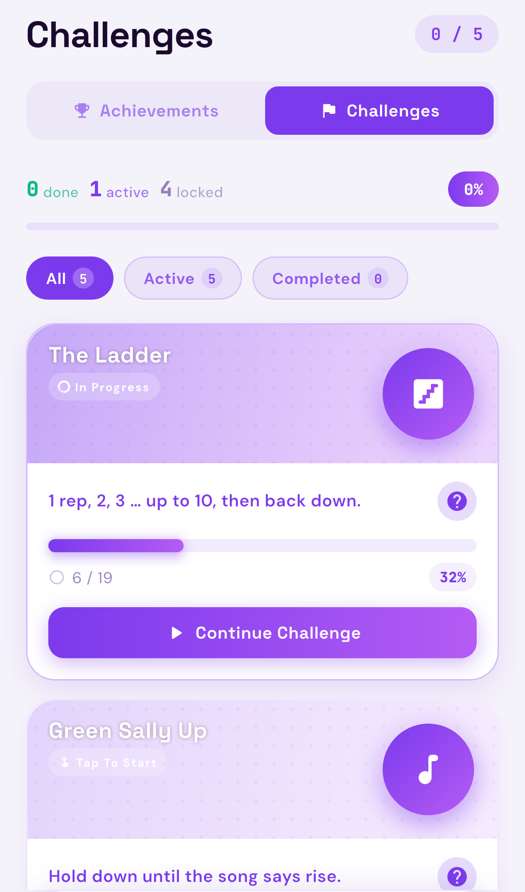
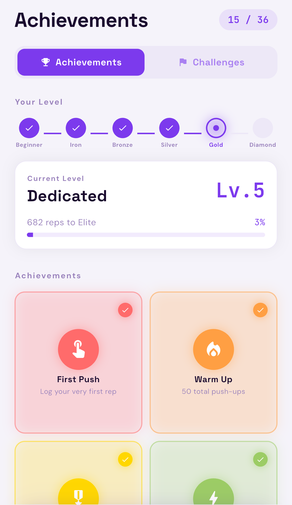
Cross-platform fitness app with custom push-up plans, streak tracking, achievements, and body progress — available on iOS and Android. Powered by a secure serverless AWS backend.
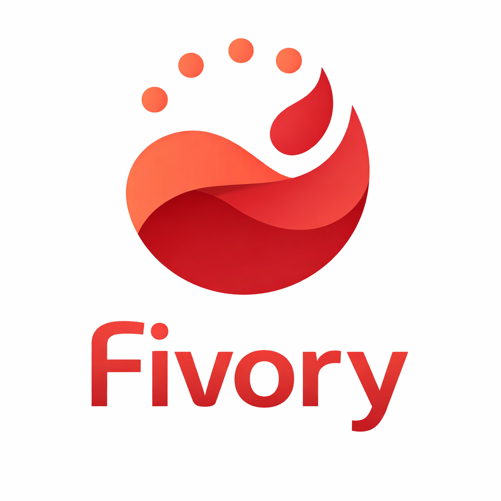
Fivory
Balance five life areas. Daily.
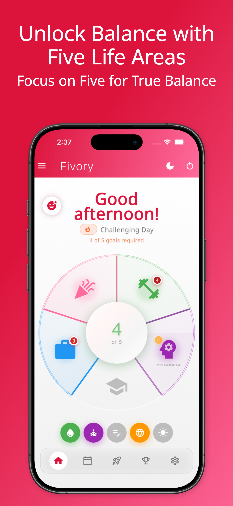
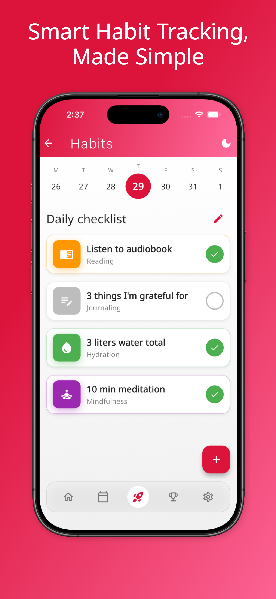
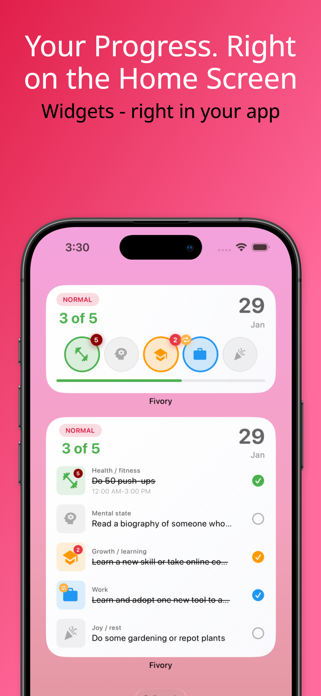
Habit and productivity app with 500+ active users. Helps balance five life areas daily — Health, Mind, Work, Relationships, and Finance. Built on a fully serverless and secure AWS backend.
DevOps Projects
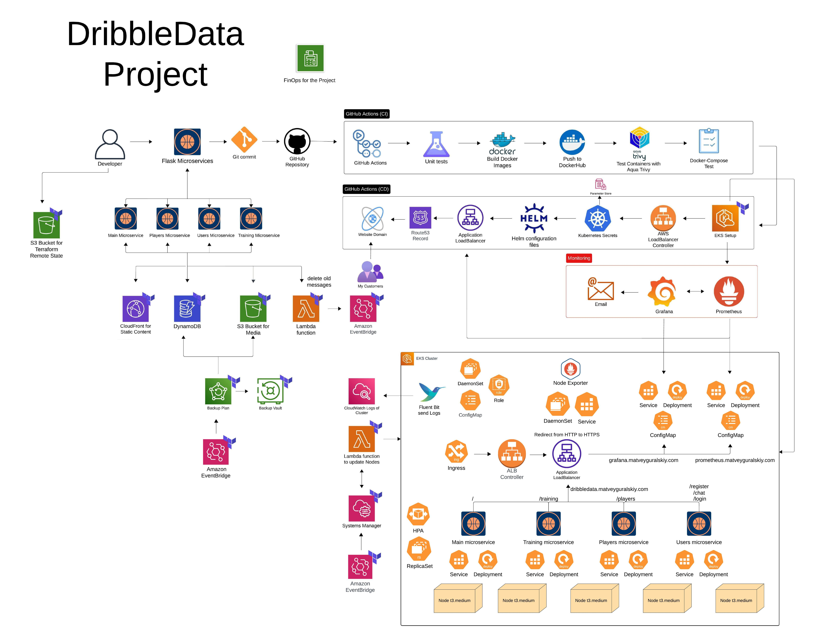
DribbleData Project
DribbleData project is a microservices architecture where Flask services integrate with AWS for a scalable, secure, and flexible system. With Kubernetes containerization and CI/CD automation GitHub Actions.
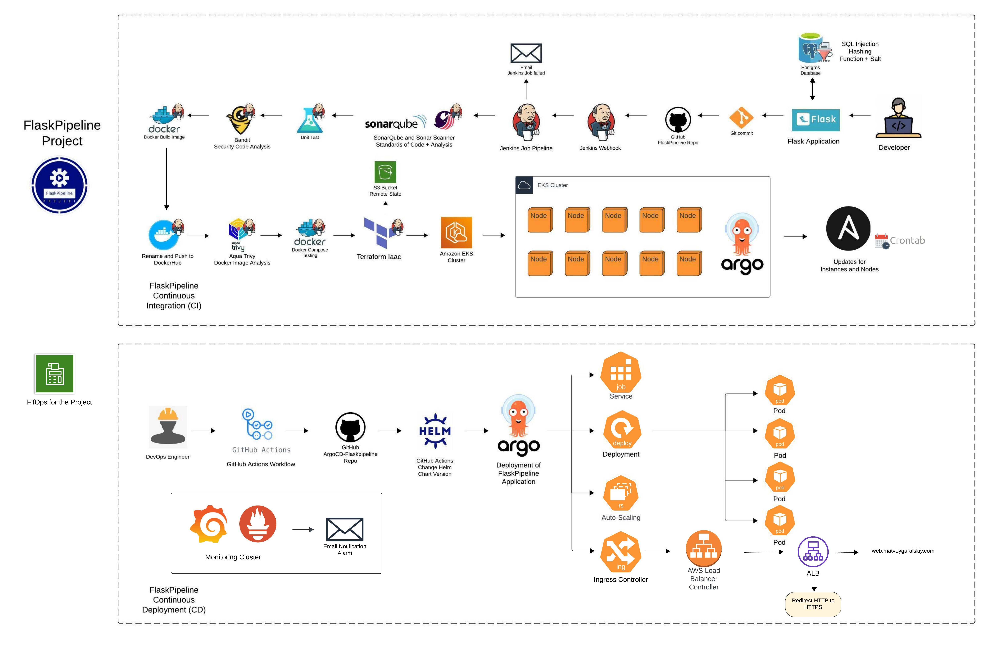
FlaskPipeline Project
This project automates the deployment of Flask applications to improve efficiency using CI/CD practices. It integrates tools for continuous integration and continuous deployment to ensure smooth and consistent updates.
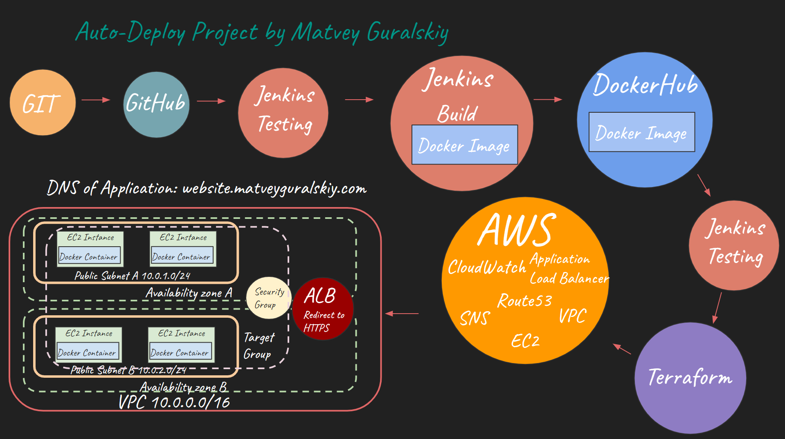
Auto-Deploy Project
This project simplifies the process of deploying applications through automation. It uses continuous integration and continuous deployment (CI/CD) practices to ensure smooth and efficient updates.